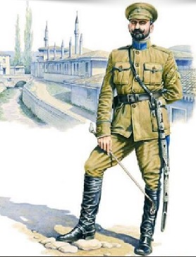

Ліричний відступ
Я - харків'янка, мешкала на вулиці Дмитра Клапцова (один з організаторів і керівників комсомольської організації Харкова). Але після Закону України "Про засудження комуністичного та націонал-соціалістичного (нацистського) тоталітарних режимів в Україні та заборону пропаганди їхньої символіки" моя вулиця отримала почесну назву "імені Петра Болбочана".
У багатьох людей це ім'я не викликало ніяких асоціацій і багато хто питав "Хто це такий?". І я така рада, що знала хто він і могла з гордістю відповідати.
Справа в тому, що мій чоловік захоплений історією України і вміє дуже добре під келих червого сухого розповідати про визначних людей та події з історії України. Так я і дізналася про Петра Болбочана, отже і вам розповім.
Біографія
Болбочан Петро Федорович - український військовий діяч, полковник Армії УНР, очільник Кримської операції проти більшовиків з метою встановлення на території півострова української влади та взяття під контроль Чорноморського флоту. Учасник радянсько-української війни, антигетьманського постання. З листопада 1918 року по січень 1919 року Болбочан керував Обороною північно-східної України.
Петро Федорович Болбочан народився 5 (17) жовтня 1883 року в селі Геджев (Гиждево) Хотинського повіту Бессарабської губернії (нині село Ярівка Хотинського району Чернівецької області) в родині молдавського православного священника та помічника благочинного 4-го округу того ж повіту Федора Олексійовича Болбочана та його дружини Єлизавети Григорівни.
У 1905 році закінчив Кишинівську духовну семінарію.
1909 року закінчив Чугуївське піхотне юнкерське училище. Під час навчання в ньому організував український гурток для поширення рідного слова.
Армія Української Народної Республіки
Після революції Болбочан активно розпочав організацію українських військових частин і допоміг у формуванні 1-го Українського полку імені Богдана Хмельницького з частин російської армії. Сформував з добровольців 5-го корпусу Південно-Західного фронту російської армії 1-й Український Республіканський полк. 22 листопада 1917 року Петра Болбочана призначено командиром полку. На початку грудня 1-й Український полк був ліквідований з наказу корпусного солдатського комітету, що перебував під контролем більшовиків. Незважаючи на опір Болбочана, полк було роззброєно, а казарми підірвані та розбиті гарматами. Значна кількість українців загинула.
У січні 1918 року, напередодні більшовицької окупації столиці, Петро Болбочан і частина старшин з великими труднощами дісталися Києва. Хоча офіційного дозволу не отримав, формує військовий підрозділ — Республіканський курінь. На чолі цього куреня Петро Болбочан взяв участь у придушенні січневого повстання більшовиків у столиці. Невдовзі Республіканський курінь реорганізовано у 2-й Запорізький піший курінь і приєднано до Окремого Запорізького загону, командиром якого призначили генерала К. Прісовського.
Відступаючи з Києва, Окремий Запорізький загін прикривав від'їзд уряду УНР. Після відходу до Житомира П. Болбочана призначили губерніальним військовим комендантом Волині.
Після укладення Берестейського миру Окремий Запорізький загін брав участь у наступі на Київ разом із Січовими Стрільцями та Гайдамацьким кошем Слобідської України, керованим Симоном Петлюрою.
2 березня 1918 року 2-й Запорізький курінь на чолі з Петром Болбочаном, випереджаючи німецькі війська, першим увійшов до Києва, який без бою залишили більшовицькі війська.
12 березня Запорізький загін реорганізовується у Запорізьку дивізію під командуванням генерала О. Натієва. Петра Болбочана призначають командиром 2-го Запорізького пішого полку. Він став найбільшим[Джерело?] полком Запорізької дивізії. На прапорі полку довкола тризуба був напис: «З вірою твердою в конечну перемогу вперед, за Україну!».
Кримська операція
10 квітня 1918 року штаб запоріжців отримав таємний наказ уряду УНР: випереджаючи німецькі війська, захопити Крим. Петро Болбочан призначений командиром Кримської групи Армії УНР на правах дивізії.
Він отримав таємний наказ уряду УНР виперидити німецькі війська і захопити Крим. Метою Кримської операції 1918 року було встановлення на півострові української влади та взяття під контроль Чорноморського флота.
24 квітня 1918 року вранці загін П.Болбочана майже без опору оволодів Сімферополем, а також Бахчисараєм.
Однак успіхи українського війська загострили відносини між союзниками. 26 квітня німецька дивізія оточила всі місця дислокації українських військ у Сімферополі та оголосила ультиматум Петру Болбочану негайно скласти зброю і виїхати з Криму. Після напружених перемовин Кримська група 27 квітня залишила півострів і зі зброєю, знаменами та значною частиною захопленого майна передислокувалася до околиць Мелітополя.
Попри такий підсумок, кримський похід виявив блискучий талант полковника Петра Болбочана і став справжнім тріумфом українського війська, однією з найбільш романтичних сторінок нашої історії.
Гетьман Павло Скоропадський саме завдяки акції Петра Болбочана зміг приєднати Крим до України на правах автономії і зберегти під українською владою Чорноморський флот. Але внаслідок антигетьманського повстання наприкінці 1918-го всі здобутки в Криму було втрачено.
Антигетьманське повстання
У листопаді 1918 полк під командуванням Болбочана одним з перших перейшов на бік Директорії УНР і був основною силою у повстанні проти гетьмана П. Скоропадського. Полковник підтримав антигетьманське повстання, проте висунув умову — зберегти від руйнування державний апарат. (Згодом ця умова була порушена.)
Він категорично виступав проти спільних дій з більшовиками. Болбочан вважав, що варто боротися лише за «самостійну демократичну Українську Республіку, а не за єдину Росію, яка б вона не була, монархічна чи більшовицька».
У грудні 1918 року Директорія УНР призначила Болбочана командувачем Лівобережною групою Армії УНР на території Харківської, Полтавської, Чернігівської губерній, яка протистояла наступу Червоної армії зі сходу. Як підкреслювали сучасники, «полковник Болбочан — найвизначніший отаман української армії того часу…». Він був успішним командиром, якого поважали і прості солдати, і старшини, викликав заздрість у бездарних воєначальників-кар'єристів та ненависть у ворогів. Через його тверду позицію та військові успіхи у боротьбі з Червоною армією за Петра Болбочана («живого чи мертвого») більшовики обіцяли 50 тис. крб.
22 грудня за наказом Головнокомандувача отамана Симона Петлюри перед Чорноморською дивізією, що входила до Осадного корпусу, було поставлене завдання зайняти і захищати фронт проти радянських частин по лінії Глухів — Шостка — Новгород-Сіверськ і, очистивши залізничну лінію Гомель-Бахмач, утримувати її. Дивізія переходила у підпорядкування командувача Лівобережного фронту отамана Петра Болбочана. Крім того, Запорізький корпус під командуванням Петра Болбочана, корпус Січових Стрільців Євгена Коновальця та дивізія Володимира Оскілка були основою армії УНР. У цих частинах панувала зразкова військова дисципліна, вони були найбільш дієздатними та найкраще виконували поставленні завдання. На перший погляд дивно, однак ці найбільш дисципліновані, національно свідомі й вірні Директорії війська, були піддані найбільшій критиці й шельмуванню. Про них поширювали різні чутки, критичні висловлювання постійно з'являлись у пресі (особливо підконтрольній більшовикам, та тим, хто їм співчував).Голова Директорії Володимир Винниченко, а за ним й Головний отаман Симон Петлюра все більш підозріло дивились на успішного полководця.
Наступ на Київ
Після вимушеного відступу військ Болбочана з Харкова полковника звинуватили у здачі міста Червоній армії без бою. Ніхто не звернув увагу на об'єктивні обставини, в яких опинилася українська армія. Якби не цей відхід, то УНР втратила б найкращі військові частини.
Не мовчав і сам Болбочан. Він різко критикував непослідовну, суперечливу політику уряду УНР та його міністрів. Вказував їм на явні помилки та прорахунки.
26 січня 1919 року в Києві він оприлюднив свого листа, в якому, зокрема, казав:
«Бідна Україна, ми боремося з большевизмом, весь культурний світ піднімається на боротьбу з ним, а український новопосталий уряд УНР йде на зустріч большевизмові й большевикам!.. Ви не можете розібратися в самих простих життєвих питаннях, (а) лізете в міністри, отамани, лізете в керівники великої держави, лізете в законодавці замість того, аби бути самими звичайними урядовцями і писарцями.»
Почалося слідство, яке не дало підстав для звинувачення Болбочана. Слідство зайшло у глухий кут, однак не припинилось. Представники лівих соціалістичних течій на чолі з В. Винниченком вимагали для Болбочана суворого покарання, вбачаючи у ньому перешкоду на шляху порозуміння із радянською Росією, на бік якої вони схилялися. Паралельно розпочинається нова хвиля цькування Петра Болбочана в пресі. Видається на те, що всі ці події були зрежисовані з одного центру.
Залишаючись під вартою без суду і слідства, Болбочан був переведений до Станіславова (нині Івано-Франківськ), де була тимчасова столиця Західноукраїнської Народної Республіки (ЗУНР), під нагляд місцевої влади.
Проте полковник замість того, щоб тихо пересидіти деякий час, постійно критикує головне командування армії УНР, уряд і самого Петлюру, говорячи про них як про дрібних авантюристів та інтриганів, в ультимативній формі вимагає прискорення розслідування, адже проти нього нема жодних доказів.
«Запоріжці» не раз зверталися до командування УНР з проханням повернути їм колишнього командувача. На цьому наполягали командири Запорізької групи.
Тим часом, втративши Київ, Житомир, Вінницю на початку червня 1919 року, Армія УНР опинилася затиснута більшовицькими військами на незначній території Поділля. Директорія та Уряд перебували у містечку Чорний Острів, єдині боєздатні частини — Запорізький корпус у Проскурові, Січові Стрільці у Старокостянтинові.
Петра Болбочана викликають до Чорного Острова, де він зустрічається з Петлюрою. Йому ставиться завдання — формування частин з українських полонених в Італії. Болбочан погодився. Проте уряд УНР чомусь всіляко відтягував нове призначення.
6 червня 1919 року, очікуючи на нове призначення, Петро Болбочан приїхав до Проскурова. Керівники групи звернулися до інспектора УНР при дивізії з проханням про повернення Петра Болбочана. На підставі цього звернення інспектор Микола Гавришко наказав Петрові Болбочану «негайно вступити в командування військами Запорізької групи». М. Гавришко зробив це відповідно до закону УНР про інспекторів. Мотиви — необхідність зміцнення армії і врахування настроїв найбільш дисциплінованого її підрозділу. Про свій наказ інспектор повідомив керівництво.
Проте 9 червня з'явився наказ, в якому Болбочана і Гавришка звинуватили у самовільному захопленні влади. Розпочалося нове слідство. Болбочан мав змогу втекти від слідства. Але не зробив цього, прагнучи довести, що за ним немає жодної вини.
10 червня 1919 року Петра Болбочана заарештували без жодного опору. Був звинувачений (разом з В. Оскілком) у намаганні призначити головою Директорії Євгена Петрушевича.
12 червня 1919 року над ним відбувся військово-польовий суд. Петра Болбочана звинувачували у невиконанні наказу, незаконному захопленні командування корпусом та участі в широкомасштабній змові з метою державного перевороту в умовах воєнного часу. Вирок, підписаний Олександром Осецьким, — смертна кара. Помилування Петра Болбочана, як вважає І. Мазепа, вело б до подальшої анархії. Він, зокрема, пояснював це тим, що Петлюра «при всій лагідності своєї вдачі все-таки хотів суворою карою покласти кінець виступам тих груп, що в найтяжчий момент нашої боротьби ганебно й безглуздо руйнували фронт». З іншого боку, протестуючи проти такого рішення, В'ячеслав Липинський, який на той час очолював дипломатичне представництво УНР у Відні, подав у відставку, оскільки «такими фактами, як розстріл Отамана Болбочана, Правительство Української Народньої Республіки стало виразно на шлях партійного терору».
28 червня 1919 року о 22-й годині Петра Болбочана розстріляли на залізничній станції біля с. Балин (нині Дунаєвецький район Хмельницької області). Там же, за півкілометра від станції, було поховано його тіло.